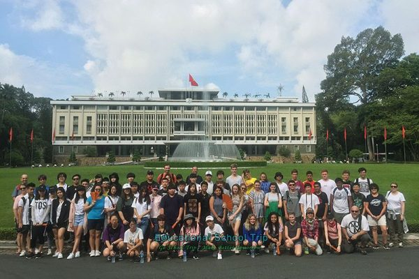

EDUCATIONAL TOURISM

Educational tourism in Vietnam allows travelers to learn while exploring, combining sightseeing with skill-building, cultural understanding, and academic experiences.
1. Cultural and Historical Education
Explore Vietnam’s rich heritage through immersive museum visits and heritage tours.
| Hue Imperial City | Hoi An Ancient Town | Thang Long Imperial Citadel |
| Explore royal palaces, shrines, and historic walls while learning about Nguyen dynasty history. | Walk cobblestone streets, visit ancient houses, and understand local trade and cultural fusion. | Discover artifacts, ceremonial halls, and multi-dynasty heritage sites with guided historical insight. |
2. Language and Culinary Courses
Practical learning experiences in language and cuisine, connecting travelers with Vietnamese daily life.
| Language Immersion | Culinary Classes |
| Vietnamese lessons in Hanoi, Ho Chi Minh City, and other urban centers with interactive conversational practice. | Hands-on preparation of pho, bun cha, banh xeo, with market visits to learn about local ingredients and cooking traditions. |
3. Art and Craft Workshops
Learn traditional Vietnamese crafts through hands-on workshops guided by local artisans.
| Batik and Pottery | Silk Weaving |
| Workshops in Bat Trang Village teaching pottery shaping, glazing, and firing techniques with cultural context. | Van Phuc Village provides silk weaving tutorials, showing traditional methods and historical significance. |
4. Student Exchange and Study Tours
Structured educational tours that combine learning with immersive cultural experiences.
| Rural & Cultural Immersion | Field Trips |
| Students experience village life, farming, and local customs under guided educational programs. | Visits to natural reserves, battlefields, and heritage sites to enrich learning in ecology, history, and social studies. |
Educational tourism in Vietnam integrates cultural, historical, and hands-on learning, ensuring every traveler gains a meaningful and immersive experience.